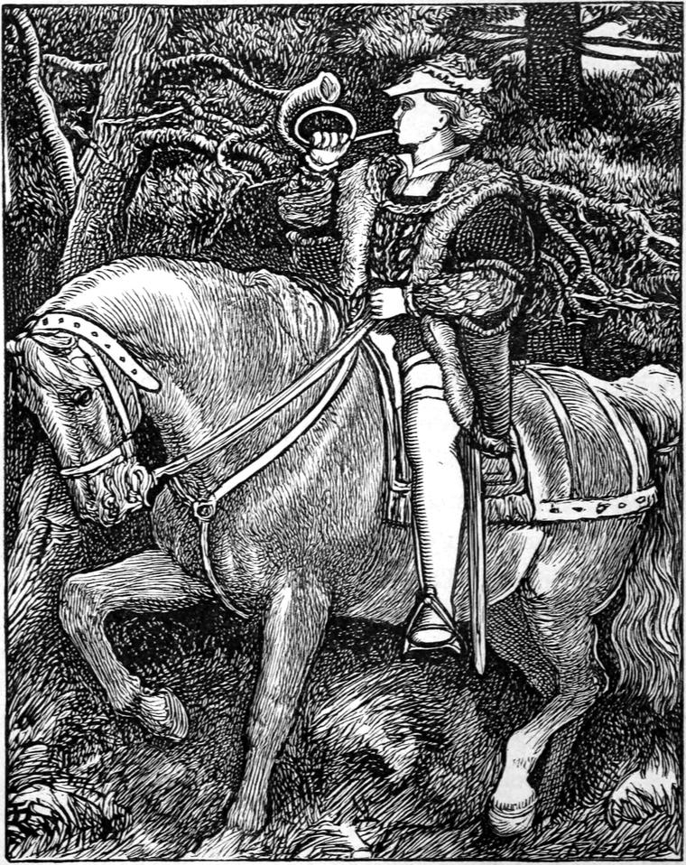

It must have been about this time that the son of a king, who lived a thousand miles from Lagobel, set out to look for the daughter of a queen. He travelled far and wide, but as sure as he found a princess, he found some fault in her. Of course he could not marry a mere woman, however beautiful; and there was no princess to be found worthy of him. Whether the prince was so near perfection that he had a right to demand perfection itself, I cannot pretend to say. All I know is, that he was a fine, handsome, brave, generous, well-bred, and well-behaved youth, as all princes are.
In his wanderings he had come across some reports about our princess; but as everybody said she was bewitched, he never dreamed that she could bewitch him. For what indeed could a prince do with a princess that had lost her gravity? Who could tell what she might not lose next? She might lose her visibility, or her tangibility; or, in short, the power of making impressions upon the radical sensorium; so that he should never be able to tell whether she was dead or alive. Of course he made no further inquiries about her.

One day he lost sight of his retinue in a great forest. These forests are very useful in delivering princes from their courtiers, like a sieve that keeps back the bran. Then the princes get away to follow their fortunes. In this they have the advantage of the princesses, who are forced to marry before they have had a bit of fun. I wish our princesses got lost in a forest sometimes.
One lovely evening, after wandering about for many days, he found that he was approaching the outskirts of this forest; for the trees had got so thin that he could see the sunset through them; and he soon came upon a kind of heath. Next he came upon signs of human neighbourhood; but by this time it was getting late, and there was nobody in the fields to direct him.
After travelling for another hour, his horse, quite worn out with long labour and lack of food, fell, and was unable to rise again. So he continued his journey on foot. At length he entered another wood—not a wild forest, but a civilized wood, through which a footpath led him to the side of a lake. Along this path the prince pursued his way through the gathering darkness. Suddenly he paused, and listened. Strange sounds came across the water. It was, in fact, the princess laughing. Now there was something odd in her laugh, as I have already hinted, for the hatching of a real hearty laugh requires the incubation of gravity; and perhaps this was how the prince mistook the laughter for screaming. Looking over the lake, he saw something white in the water; and, in an instant, he had torn off his tunic, kicked off his sandals, and plunged in. He soon reached the white object, and found that it was a woman. There was not light enough to show that she was a princess, but quite enough to show that she was a lady, for it does not want much light to see that.
Now I cannot tell how it came about,—whether she pretended to be drowning, or whether he frightened her, or caught her so as to embarrass her,—but certainly he brought her to shore in a fashion ignominious to a swimmer, and more nearly drowned than she had ever expected to be; for the water had got into her throat as often as she had tried to speak.
At the place to which he bore her, the bank was only a foot or two above the water, so he gave her a strong lift out of the water, to lay her on the bank. But, her gravitation ceasing the moment she left the water, away she went up into the air, scolding and screaming.
"You naughty, naughty, NAUGHTY, NAUGHTY man!" she cried.
No one had ever succeeded in putting her into a passion before.—When the prince saw her ascend, he thought he must have been bewitched, and have mistaken a great swan for a lady. But the princess caught hold of the topmost cone upon a lofty fir. This came off; but she caught at another, and, in fact, stopped herself by gathering cones, dropping them as the stocks gave way. The prince, meantime, stood in the water, staring, and forgetting to get out. But the princess disappearing, he scrambled on shore, and went in the direction of the tree. There he found her climbing down one of the branches towards the stem. But in the darkness of the wood, the prince continued in some bewilderment as to what the phenomenon could be; until, reaching the ground, and seeing him standing there, she caught hold of him, and said,—
"I'll tell papa."
"Oh no, you won't!" returned the prince.
"Yes, I will," she persisted. "What business had you to pull me down out of the water, and throw me to the bottom of the air? I never did you any harm."
"Pardon me. I did not mean to hurt you."
"I don't believe you have any brains; and that is a worse loss that your wretched gravity. I pity you."
The prince now saw that he had come upon the bewitched princess, and had already offended her. But before he could think what to say next, she burst out angrily, giving a stamp with her foot that would have sent her aloft again but for the hold she had of his arm,—
"Put me up directly."
"Put you up where, you beauty?" asked the prince.
He had fallen in love with her almost, already; for her anger made her more charming than any one else had ever beheld her; and, as far as he could see, which certainly was not far, she had not a single fault about her, except, of course, that she had not any gravity. No prince, however, would judge of a princess by weight. The loveliness of her foot he would hardly estimate by the depth of the impression it could make in the mud.
"Put you up where, you beauty?" asked the prince.
"In the water, you stupid!" answered the princess.
"Come, then," said the prince.
The condition of her dress, increasing her usual difficulty in walking, compelled her to cling to him; and he could hardly persuade himself that he was not in a delightful dream, notwithstanding the torrent of musical abuse with which she overwhelmed him. The prince being therefore in no hurry, they came upon the lake at quite another part, where the bank was twenty-five feet high at least; and when they had reached the edge, he turned towards the princess, and said,—
"How am I to put you in?"
"That is your business," she answered, quite snappishly. "You took me out—put me in again."
"Very well," said the prince; and, catching her up in his arms, he sprang with her from the rock. The princess had just time to give one delighted shriek of laughter before the water closed over them. When they came to the surface, she found that, for a moment or two, she could not even laugh, for she had gone down with such a rush, that it was with difficulty she recovered her breath. The instant they reached the surface—
"How do you like falling in?" said the prince.
After some effort the princess panted out,—
"Is that what you call falling in?"
"Yes," answered the prince, "I should think it a very tolerable specimen."
"It seemed to me like going up," rejoined she.
"My feeling was certainly one of elevation too," the prince conceded.
The princess did not appear to understand him, for she retorted his question:—
"How do you like falling in?" said the princess.
"Beyond everything," answered he; "for I have fallen in with the only perfect creature I ever saw."
"No more of that: I am tired of it," said the princess.
Perhaps she shared her father's aversion to punning.
"Don't you like falling in, then?" said the prince.
"It is the most delightful fun I ever had in my life," answered she. "I never fell before. I wish I could learn. To think I am the only person in my father's kingdom that can't fall!"
Here the poor princess looked almost sad.
"I shall be most happy to fall in with you any time you like," said the prince, devotedly.
"Thank you. I don't know. Perhaps it would not be proper. But I don't care. At all events, as we have fallen in, let us have a swim together."
"With all my heart," responded the prince.
And away they went, swimming, and diving, and floating, until at last they heard cries along the shore, and saw lights glancing in all directions. It was now quite late, and there was no moon.
"I must go home," said the princess. "I am very sorry, for this is delightful."
"So am I," returned the prince. "But I am glad I haven't a home to go to—at least, I don't exactly know where it is."
"I wish I hadn't one either," rejoined the princess; "it is so stupid! I have a great mind," she continued, "to play them all a trick. Why couldn't they leave me alone? They won't trust me in the lake for a single night!—You see where that green light is burning? That is the window of my room. Now if you would just swim there with me very quietly, and when we are all but under the balcony, give me such a push—up you call it—as you did a little while ago, I should be able to catch hold of the balcony, and get in at the window; and then they may look for me till to-morrow morning!"
"With more obedience than pleasure," said the prince, gallantly; and away they swam, very gently.
"Will you be in the lake to-morrow night?" the prince ventured to ask.
"To be sure I will. I don't think so. Perhaps," was the princess's somewhat strange answer.
But the prince was intelligent enough not to press her further; and merely whispered, as he gave her the parting lift, "Don't tell." The only answer the princess returned was a roguish look. She was already a yard above his head. The look seemed to say, "Never fear. It is too good fun to spoil that way."
So perfectly like other people had she been in the water, that even yet the prince could scarcely believe his eyes when he saw her ascend slowly, grasp the balcony, and disappear through the window. He turned, almost expecting to see her still by his side. But he was alone in the water. So he swam away quietly, and watched the lights roving about the shore for hours after the princess was safe in her chamber. As soon as they disappeared, he landed in search of his tunic and sword, and, after some trouble, found them again. Then he made the best of his way round the lake to the other side. There the wood was wilder, and the shore steeper—rising more immediately towards the mountains which surrounded the lake on all sides, and kept sending it messages of silvery streams from morning to night, and all night long. He soon found a spot whence he could see the green light in the princess's room, and where, even in the broad daylight, he would be in no danger of being discovered from the opposite shore. It was a sort of cave in the rock, where he provided himself a bed of withered leaves, and lay down too tired for hunger to keep him awake. All night long he dreamed that he was swimming with the princess.